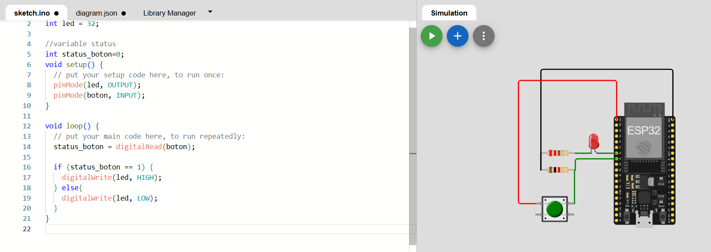
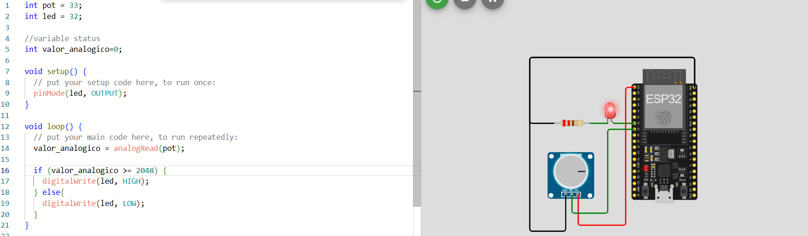
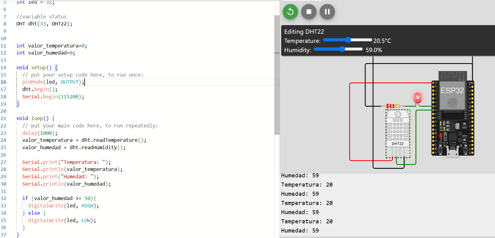

Practica 2
Laboratorio de Redes Digitales de Datos
Departamento de Ciencias e Ingenierías | Universidad Iberoamericana Puebla, México.
ESP32 Sensores


- Resumen -
esta práctica nos permitirá adquirir experiencia práctica en el uso de diferentes tipos de sensores con nuestros ESP32 y ESP8266, lo cual es fundamental para desarrollar proyectos de IoT y automatización.
- Introducción -
El ESP32 es un microcontrolador de bajo costo y alto rendimiento que se utiliza en una amplia gama de proyectos de IoT (Internet of Things). Este módulo permite trabajar con entradas y salidas digitales, entre otras capacidades. En esta práctica, se utilizará el ESP32 para controlar LEDs a través de entradas de botones, demostrando cómo interactuar con los pines GPIO del dispositivo. Esta actividad es esencial para comprender el uso básico de las entradas y salidas digitales y su aplicación en proyectos más complejos.
- Materiales -
- Node MCU ESP8266 o ESP32
- LED, resistencia de 220 Ohms
- Botón y resistencia de 1Khom
- Sensores: Potenciómetro, DHT22, PIR
- Protoboard y cables
- Desarrollo -
En el mundo de la electrónica y la programación, los sensores juegan
un papel crucial al permitir que nuestros dispositivos interactúen
con el entorno. Ya sea midiendo la temperatura, detectando
movimiento o simplemente registrando si un botón está presionado,
los sensores son los ojos y oídos de nuestros proyectos.
En esta práctica, exploraremos tres tipos principales de sensores:
digitales, analógicos e inteligentes. Los sensores digitales nos dan
información en forma de "encendido" o "apagado", como un interruptor
de luz. Los sensores analógicos, por otro lado, nos proporcionan una
gama de valores, como la intensidad de la luz o la temperatura.
Finalmente, los sensores inteligentes combinan la detección con
procesamiento de datos, como el DHT22 que mide temperatura y
humedad.
Trabajaremos con las placas ESP32 y ESP8266, dos microcontroladores
populares en el mundo del Internet de las Cosas (IoT). Estos
dispositivos nos permiten conectar nuestros sensores a redes WiFi y
enviar datos a la nube, abriendo un mundo de posibilidades para
proyectos de monitoreo, automatización y control.
Simulación
Se utilizará Wokwi para simular cada uno de los circuitos desarrollados en los objetivos anteriores. En cada simulación se probarán los diferentes programas para asegurarse de que los sistemas funcionan correctamente antes de implementar el hardware real. Se incluirán capturas de pantalla de las simulaciones y videos de las pruebas realizadas.



Diseño
El diseño del sistema consta de un NodeMCU ESP32 conectado a LED's y botones que permiten controlar el estado del LED dependiendo de el estado y programacion de el sensor, en este caso el de movimiento, temperatura y humedad y potenciómetro; en cada una de ellas se programara para que el LED se encienda o apague dependiendo de la programacion.
Construcción
El circuito se construirá en una protoboard, conectando el ESP32 a los componentes (LED y botones) utilizando cables adecuados. Las conexiones se realizarán siguiendo el diagrama de diseño. Una vez construido el circuito, se cargarán los programas desarrollados en el IDE de Arduino para probar su funcionamiento.
- Resultados -
- Los resultados obtenidos permitirán observar cómo los diferentes
programas controlan el LED mediante las salidas de los sensores. En
la simulación, se verificarán los siguientes comportamientos:
- Encendido y apagado del LED según las salidas de los sensores.
- Control de los sensores con los led y salidas dependiendo de sus
valores de salida.
- Conclusiones -
Con esta práctica, se ha logrado entender el funcionamiento de los sensores digitales, analógicos e inteligentes, así como su interacción con el LED a través de los sensores. Los programas fueron probados tanto en simulación como en hardware real, demostrando la efectividad.
- Referencias -
Gomez, S. B., & Herrera, H. J. R. (2022). Sistema IoT basado en ESP32 para el control y monitoreo de cultivos en invernadero con enfoque de agricultura 4.0. Ingeniería investiga, 4.
Madakam, S., Ramaswamy, R., & Tripathi, S. (2015). Internet of Things (IoT): A literature review. Journal of Computer and Communications, 3(5), 164-173.
Gokhale, P., Bhat, O., & Bhat, S. (2018). Introduction to IOT. International Advanced Research Journal in Science, Engineering and Technology, 5(1), 41-44.
- Descargables -
Descargar documento PDF: documento.pdf
Descargar codigo Arduino: codigo.ino
Descargar Archivo 3d .STL: pieza.stl